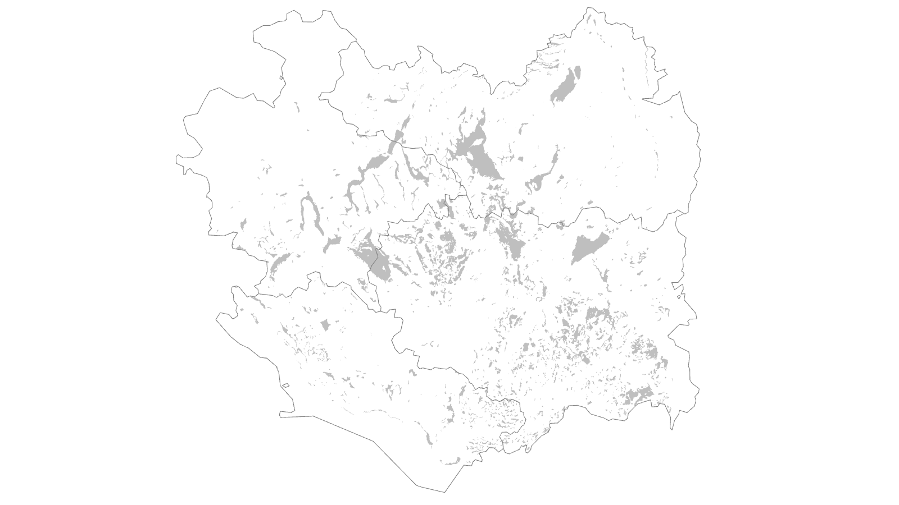

Kleine Fläche, große Wirkung
Moore nehmen geringe Flächenanteile ein, können aber für Klimaschutz, Biodiversität und Wasserhaushalt entscheidend sein.
Moore · Klimaschutz · regionale Planung
Wiedervernässung verändert mehr als Wasserstände. Sie verändert Nutzung, Betriebe, Wertschöpfung und Planung.
Moore nehmen geringe Flächenanteile ein, können aber für Klimaschutz, Biodiversität und Wasserhaushalt entscheidend sein.
Globale Karten zeigen Relevanz. Planung beginnt dort, wo nationale, regionale und betriebliche Ebenen zusammenkommen.
Schutz, Nutzung und Förderung müssen zusammen gedacht werden.
Kernargument
Moorschutz wird planbar, wenn Boden, Nutzung, Wasserstand, Betriebe und Wertschöpfung zusammen betrachtet werden.
Grundlagen
Moorböden speichern Kohlenstoff im Torf. Werden sie entwässert, gelangt Sauerstoff in den Torfkörper; Torf wird abgebaut und es entstehen langfristige Treibhausgasemissionen – vor allem CO₂, ergänzt durch CH₄- und N₂O-Komponenten.
Höhere Wasserstände können den Torfabbau deutlich bremsen. Die tatsächliche Klimawirkung hängt jedoch vom Standort, vom Zielwasserstand und von der künftigen Nutzung ab. Diese Seite berechnet deshalb keine Treibhausgasminderung. Sie zeigt die räumliche Ausgangskulisse, in der Minderung durch Wasserstandsmanagement und angepasste Nutzung fachlich geprüft werden kann.
Grundlagen: IPCC Wetlands Supplement, Umweltbundesamt, BMUV, LUBW.
Frame-Mismatch
Globale Karten erklären, warum Moore relevant sind. In der Praxis entscheidet sich das Thema dort, wo Wasserstand, Nutzung, Eigentum, Betriebe und Wertschöpfungsketten zusammenkommen.
Speicher, Emissionen und internationale Zielgrößen begründen den Handlungsdruck.
Karten zeigen, dass Moorbodenschutz nicht überall gleich aussieht.
Wasser, Bewirtschaftung, Verarbeitung und Abnahme müssen zusammenpassen.
Kartenfolge
Globale Karten zeigen, warum Moore relevant sind. Regional wird sichtbar, wo Planung beginnt.
01 / Welt
Moore nehmen global wenig Raum ein. Für Klima, Wasser und Biodiversität sind sie trotzdem entscheidend.
02 / Gesamt
Die absolute Menge zeigt, wo drainierte organische Böden global besonders stark zur Emissionsbilanz beitragen.
03 / Intensität
Die Intensitätskarte erzählt eine andere Geschichte: Nicht nur die Gesamtmenge zählt, sondern der Druck pro Fläche.
04 / Europa
Der Maßstab wechselt: Klimafragen werden zu politischen und regionalen Planungskulissen.
05 / Deutschland
Organische Böden bilden eine Planungskulisse. Welche Nutzung tragfähig ist, entscheidet sich aber erst darunter.
06 / Bodenkontext
Typen, Nutzung und Wasserstand unterscheiden sich. Deshalb braucht Moorbodenschutz mehr als eine Flächenkarte.
07 / Baden-Württemberg
In Baden-Württemberg wird sichtbar, wo Moor- und Feuchtbodenkontexte auf Zuständigkeiten und regionale Planung treffen.
08 / Oberschwaben
Oberschwaben zeigt, wo Moor- und Feuchtbodenkontexte regional gebündelt auftreten. Im nächsten Schritt wird sichtbar, wo diese Räume auf heutige landwirtschaftliche Nutzung treffen.





Datenbasis: Global Peatland Map 2.0, FAOSTAT, Thünen-Kulisse organischer Böden, BK50 Baden-Württemberg und eigene kartografische Aufbereitung. Methode in Kürze.
Moore verstehen
Ein Moor ist kein gewöhnlicher Boden. Solange Torf nass bleibt, speichert er Kohlenstoff; wird er entwässert, wird er zur dauerhaften Emissionsquelle. Darum führt die Oberschwaben-Story von Boden und Nutzung direkt zur Frage: Wie lässt sich Wasserstand verändern, ohne Betriebe und Landschaften zu überfordern?
Torf entsteht, wenn Pflanzenreste unter nassen, sauerstoffarmen Bedingungen langsamer abgebaut als aufgebaut werden. Sinkt der Wasserstand, gelangt Sauerstoff in den Torfkörper; Torf mineralisiert; dabei entstehen vor allem CO₂ sowie weitere klimawirksame Gase.
Für landwirtschaftliche Transformationsfragen sind häufig Niedermoore und Feuchtbodenkomplexe relevant. Ob Nassgrünland, Paludikultur, Renaturierung oder Moor-PV realistisch sind, hängt von Wasserstand, Degradierung, Nährstoffen, Technik und regionaler Koordination ab.
Regionale Planung
In Baden-Württemberg wird Moorschutz zur Planungsfrage: Welche Nutzungen sind berührt, welche betrieblichen Fragen entstehen und welche Produkte könnten tragfähig werden?
Die Moorschutzkonzeption Baden-Württemberg liefert den strategischen Rahmen für Schutz, Renaturierung, Monitoring und Förderung.
SOLAMO-BW untersucht regionale Betriebsperspektiven und die praktische Tragfähigkeit von Nutzungskonzepten auf wiedervernässten landwirtschaftlichen Moorflächen.
Nässeverträgliche Kulturen, robuste Weidesysteme sowie stoffliche oder energetische Nutzung benötigen tragfähige Märkte.
Transformationspfade
Entscheidend ist die passende Kombination aus Wasserstand, Nutzung, Betriebsperspektive und Förderung.
Naturnahe Moore erhalten, hydrologische Störungen begrenzen und Nährstoffeinträge reduzieren.
Entwässerte Moorböden vernässen und Nutzung schrittweise auf nasse Bedingungen ausrichten.
Produkte, Wertschöpfungsketten und Betriebsmodelle entwickeln, die mit höheren Wasserständen vereinbar sind.
Methodische Grenze
Die Karten zeigen Bodenkontexte und räumliche Überschneidungen. Sie ersetzen keine Eignungsprüfung, Priorisierung oder betriebliche Betroffenheitsanalyse.
Datenbasis: Global Peatland Map 2.0, Thünen-Kulisse organischer Böden, BK50 Baden-Württemberg, LUBW/Moorschutzkonzeption, SOLAMO-BW.
Fokusraum
Oberschwaben ist für Baden-Württemberg ein zentraler Fokusraum, weil sich hier Moor- und Feuchtbodenkontexte, landwirtschaftliche Nutzung und Fragen künftiger Wertschöpfung besonders deutlich überlagern. Der Blick auf die Region macht die Transformationsfrage konkret: Wo treffen Klimaschutz, Wasserstand, heutige Nutzung, betriebliche Umstellung und regionale Kooperation aufeinander?
Grundlagen: LAZBW Moorbodenbewirtschaftung, MLR BW Moore, SOLAMO-BW.
Regionale Planung
Die regionale Karte zerlegt den Zusammenhang in einzelne Ebenen: Verwaltungsraum, landwirtschaftliche Nutzung, Moor-/Feuchtbodenkontext und ihre räumliche Überschneidung.
Begriffliche Einordnung
Die regionale Karte zeigt keinen parzellenscharfen Nachweis aktueller Moorböden. Sie nutzt den BK50-Moor- und Feuchtbodenkontext als Orientierungskulisse: organische Böden, Feuchtbodenlagen und bodenkundlich verwandte Hinweise werden bewusst als Prüfkontext gelesen, nicht als Flächeneignung.


1 / Region
Biberach, Ravensburg, Sigmaringen und Bodenseekreis.
2 / Nutzung
Ackerland, Grünland und Dauerkulturen bilden unterschiedliche Produktionsräume. Für regionale Moorschutzstrategien ist diese Nutzungskulisse ein Ausgangspunkt, aber noch keine Aussage über Eignung oder Priorität.
3 / Bodenkontext
Sie markieren Räume, in denen Boden, Wasserstand und heutige Bewirtschaftung gemeinsam geprüft werden müssen.
4 / Schnittmenge
Die Schnittmenge aus landwirtschaftlicher Nutzung und Moor-/Feuchtbodenkontext markiert Räume, in denen konkrete Fragen entstehen: Bewirtschaftung, Wasserstand, Betriebslogik, Förderung und regionale Abstimmung.
5 / Einordnung
Die Karte ordnet die Überschneidung von landwirtschaftlicher Nutzung und Moor-/Feuchtbodenkontext räumlich ein. Entscheidungen brauchen eine Standortprüfung.
Interaktive Vertiefung
Die statische Karte ordnet ein. Die interaktive Version vertieft: Sie zeigt dieselbe Schnittmenge als scharfe Vektorkarte mit Landkreisorientierung.
Interaktive Vertiefung separat öffnen
Auf kleinen Bildschirmen ist die externe Kartenansicht in einem eigenen Tab besser lesbar. Die Kernaussage bleibt: Die Schnittmenge markiert Prüfbedarf, nicht automatisch Eignung.
Interaktive Karte öffnenInteraktive Karte: Felt; Basiskarte/Daten: OpenStreetMap. Eigene GIS-Aufbereitung aus landwirtschaftlicher Nutzung und BK50-Moor-/Feuchtbodenkontext, via mapshaper für den Webeinsatz vereinfacht. Methodische Grenzen siehe Methode in Kürze.
Externer Kartendienst: Felt/OpenStreetMap. Details stehen im Quellen- und Methodenbereich.
Nach der Karte folgt die Bilanz: Wie groß ist die Schnittmenge, und welche Nutzung dominiert?
Flächenbilanz
Die Verschneidung zeigt, dass die Überschneidung von landwirtschaftlicher Nutzung und Moor-/Feuchtbodenkontext auch in der Bilanz relevant wird.
Hinweis: Stilllegung und unklare Zuweisungen sind separat ausgewiesen; Werte gerundet.
Die Hektarbilanz basiert auf der ursprünglichen GIS-Verschneidung von FIONA 2024,
BK50-Moor-/Feuchtbodenkontext und GISCO NUTS 2024. Die für Felt/mapshaper
vereinfachte Web-Geometrie wurde nicht für die Flächenberechnung verwendet.
Berechnungsgrundlage der Hektarbilanz
Datenbasis: FIONA 2024, BK50 Moor-/Feuchtbodenkontext und GISCO NUTS 2024; eigene Auswahl, Klassifikation und Verschneidung.
Eigene Verschneidung und kartografische Generalisierung aus FIONA 2024, BK50-Moor-/Feuchtbodenkontext und GISCO NUTS 2024; gerundete Orientierungswerte. Methode in Kürze.
Transformationspfade
Die Oberschwaben-Karte zeigt nicht, was auf einer einzelnen Fläche getan werden muss. Sie zeigt, wo unterschiedliche Transformationspfade verhandelt werden müssen: zwischen Wasserstand, Nutzung, Betriebslogik, Förderung und regionaler Kooperation.
Pfad 1 · Grünlandnah
Ein großer Teil der Oberschwaben-Schnittmenge liegt im Grünlandkontext. Fachlich spricht das für Pfade, die an bestehende Nutzungen anschließen: Nassgrünland, angepasste Schnittregime, extensive Beweidung oder robuste Weidesysteme. Entscheidend ist nicht nur der Wasserstand, sondern auch, ob Futter, Arbeit und Verwertung in die Betriebslogik passen.
Pfad 2 · Ackerbaulich sensibel
Ackerland in Moor- oder Feuchtbodenkontexten ist meist der stärkere Transformationsfall. Hier geht es nicht um eine einfache Extensivierung, sondern um Nutzungswechsel, neue Kultur- und Produktpfade, Flächentausch oder langfristige Einkommens- und Investitionssicherheit.
Pfad 3 · Sonder- und Dauerkultur
Dauerkulturen und spezialisierte Nutzungen sind kleinräumig und betriebsnah zu interpretieren. Sie eignen sich nicht für pauschale Aussagen. In solchen Räumen muss zuerst geklärt werden, ob der Moor-/Feuchtbodenkontext überhaupt mit realistischen Wasserstands- und Nutzungspfaden zusammengebracht werden kann.
Pfad 4 · Kooperation
Wiedervernässung und nasse Nutzung hängen an Gräben, Stauregimen, Nachbarschaft, Infrastruktur und Zuständigkeiten. Deshalb wird aus einer Flächenfrage schnell eine Governance-Frage: Landwirtschaft, Kommunen, Wasserwirtschaft, Naturschutz und Förderung müssen gemeinsam handlungsfähig werden.
Schematische Einordnung
Die Grafik verdichtet die zentrale Engstelle: Auf dem Feld und bis zur Ernte gibt es erprobte Ansätze. Dahinter entscheiden Logistik, Verarbeitung, Standards und Abnahme darüber, ob nasse Nutzung skalierbar wird.
Technik, Lagerung und Logistik sind teils vorhanden, müssen aber standort- und produktbezogen weiterentwickelt werden.
Für viele Pfade fehlen noch ausreichend Anlagen, Routinen oder belastbare Verarbeitungsoptionen.
Nachfrage, verlässliche Abnehmer und Marktzugang sind oft noch die eigentliche Engstelle.
Standards, Nachweise und Marktrahmen sind für viele Produkte noch nicht breit etabliert.
Kleinere Mengen, fehlende Skalierung oder unsichere Absatzwege begrenzen die Marktfähigkeit.
Qualitative Synthese, keine Messgrafik und keine formale Bewertung einzelner Produkte oder Regionen.
Nutzung und Wertschöpfung
Transformationspfade entstehen nicht allein aus dem Bodenkontext. Entscheidend ist, welche heutige Nutzung betroffen ist, welche Wasserstände erreichbar sind und ob passende Technik, Verarbeitung und Absatzwege vorhanden sind.
Grünlanddominierte Schnittmengen führen eher zu Prüfpfaden wie Nasswiese, Nassweide oder extensiver Beweidung. Ackerbaulich genutzte Schnittmengen bedeuten meist stärkere Umstellung und benötigen andere Kulturen, Technik und Wertschöpfungsketten. Sonder- und Dauerkulturen sind als Einzelfall zu prüfen. Größere Flächenverbünde führen schnell zu Kooperationsfragen: Wasserstand, Gräben, Flächentausch, Verarbeitung und Abnahme lassen sich selten einzelbetrieblich lösen.
Die Pfade werden erst tragfähig, wenn für Biomasse, Pflege, Energie oder Flächenorganisation verlässliche Abnahme und Erlöse entstehen. Die Matrix zeigt keine Empfehlung pro Standort, sondern typische Kombinationen aus Nutzung, Nutzung / Produkt und Engpass.
Verarbeitung lohnt sich erst bei ausreichender Menge. Anbau lohnt sich erst bei sicherer Abnahme. Nachfrage entsteht erst bei verlässlicher Qualität, Standards und wettbewerbsfähigen Produkten. Deshalb ist Moorschutz auf Landwirtschaftsflächen immer auch Wertschöpfungs- und Koordinationsarbeit.
Grundlagen: kuratierte Literatur- und Projektauswertung zu Paludikultur, Nassgrünland, Nassweide, Sphagnum, Moor-PV und SOLAMO-BW-Wertschöpfungsketten; diese Matrix ordnet typische Pfade und Engpässe, ersetzt aber keine Standortentscheidung.
Wasser und Governance
Wiedervernässung wird nicht allein auf der einzelnen Fläche entschieden. Der Wasserstand verbindet Parzellen, Betriebe, Gräben, Vorfluter und Nachbarschaften. Deshalb beginnt Abstimmung oft dort, wo Zuständigkeiten nicht deckungsgleich sind.
zeigt Nutzung, Eigentum und Bewirtschaftung – aber nur einen Ausschnitt des Wasserhaushalts.
entscheidet über Arbeitsabläufe, Futter, Technik und Risiko – liegt aber oft über mehrere Wasserlagen verteilt.
bestimmt, welche Wasserstände gemeinsam steuerbar sind – und wer dafür zusammen planen muss.
Konsequenz: Karten können Prüfbedarf sichtbar machen. Planung braucht zusätzlich lokale Wasserkenntnis, Abstimmung zwischen Eigentümern und Betrieben sowie tragfähige Bewirtschaftungs- und Verwertungspfade.
Konsequenz
Wiedervernässung bleibt der ökologische Kern. Für die Praxis reicht die Flächenperspektive aber nicht aus: Entscheidend wird, ob Wasser, Nutzung, Verarbeitung und Nachfrage als zusammenhängendes System funktionieren.
Ohne passende Nutzung und Abnahme entstehen aus nassen Flächen noch keine tragfähigen Pfade.
Parzellen, Betriebe und Wasserhaushalt passen selten deckungsgleich zusammen.
Verarbeitung, Standards, Mengen und Nachfrage entscheiden, welche Optionen regional anschlussfähig werden.
Die Seite ist eine räumliche Orientierung. Sie kombiniert öffentliche und projektbezogene Datengrundlagen mit eigener Auswahl, Klassifikation, Verschneidung und kartografischer Aufbereitung. Maßgeblich bleiben die Originalbedingungen der jeweiligen Datenbereitsteller.
Die Seite kombiniert öffentliche Datengrundlagen und eigene kartografische Auswertungen. Die großräumigen Karten nutzen internationale und nationale Referenzdaten; die regionale Oberschwaben-Auswertung verschneidet FIONA 2024, BK50 Moor-/Feuchtbodenkontext und GISCO NUTS 2024.
Die Flächenbilanz beruht auf einer eigenen Auswahl, Klassifikation und Verschneidung der Nutzungsklassen mit dem Boden- und Feuchtbodenkontext. Die BK50 ist eine generalisierte Bodenkarte im Maßstab 1:50.000. Sie eignet sich für räumliche Orientierung, aber nicht für parzellenscharfe Eignungsentscheidungen.
Die Darstellung zeigt Prüfbedarf und typische Zusammenhänge. Sie ist keine hydrologische Modellierung, keine Priorisierung, keine Eignungskarte und keine betriebliche Betroffenheitsanalyse.
Die Karten zeigen Bodenkontexte und räumliche Überschneidungen. Flächenwerte für Oberschwaben beruhen auf eigener Auswahl, Klassifikation und Verschneidung von FIONA, BK50 Moor-/Feuchtbodenkontext und GISCO NUTS; Werte sind gerundet.
Die Darstellung ist keine Eignungskarte, keine Priorisierung, keine hydrologische Modellierung und keine betriebliche Betroffenheitsanalyse. Standortentscheidungen erfordern zusätzliche Prüfung von Wasserstand, Hydrologie, Eigentums- und Bewirtschaftungsstruktur, Schutzstatus, Förderung, Technik und Wertschöpfungsketten.
| Datengrundlage | Rechte / Lizenz | Quellenvermerk im Projekt |
|---|---|---|
| Global Peatland Map 2.0 / Global Peatland Database | Öffentlich bereitgestellt; Originalbedingungen der Datenbereitsteller beachten. | Global Peatland Map 2.0 / Greifswald Mire Centre / Global Peatlands Initiative; eigene kartografische Aufbereitung. |
| FAOSTAT | FAO Statistical Database Terms of Use; CC BY 4.0; kein FAO-Endorsement. | FAO. FAOSTAT. Emissionen aus drainierten organischen Böden; eigene Klassifikation und kartografische Aufbereitung. Lizenz: CC BY 4.0. |
| Thünen-Kulisse organischer Böden | Creative Commons Attribution 4.0 International (CC BY 4.0). | Thünen-Institut / Wittnebel, Frank & Tiemeyer: Aktualisierte Kulisse organischer Böden in Deutschland; eigene kartografische Aufbereitung. |
| Eurostat GISCO NUTS | Eurostat/GISCO-Bedingungen; bei Verwaltungsgrenzen: © EuroGeographics. | Eurostat GISCO NUTS; © EuroGeographics bezüglich der Verwaltungsgrenzen; eigene Auswahl und kartografische Aufbereitung. |
| FIONA Baden-Württemberg | Datenlizenz Deutschland – Namensnennung – Version 2.0 (dl-de/by-2-0). | MLR Baden-Württemberg / FIONA 2024; eigene Klassifikation und Verschneidung. |
| LGRB / BK50 Baden-Württemberg | Datenproduktspezifische LGRB-Bedingungen; offene GeoLa-/BK50-Themen nach dl-de/by-2-0. | Datenquelle: Regierungspräsidium Freiburg – LGRB, www.lgrb-bw.de; BK50 Moor-/Feuchtbodenkontext; eigene Aufbereitung. |
| LGL Baden-Württemberg, soweit verwendet | Offene Geobasisdaten nach dl-de/by-2-0. | Datenquelle: LGL, www.lgl-bw.de, dl-de/by-2-0; eigene kartografische Aufbereitung. |
| IPCC Wetlands Supplement | Öffentlich bereitgestellter IPCC-Bericht; Quellenhinweis nach IPCC-Zitation; keine Weiterlizenzierung der Inhalte. | IPCC (2014): 2013 Supplement to the 2006 IPCC Guidelines for National Greenhouse Gas Inventories: Wetlands, insbesondere Kapitel 2 zu drainierten organischen Böden und Kapitel 3 zu wiedervernässten organischen Böden. |
| VIP – Vorpommern Initiative Paludikultur | Öffentlich zugänglicher Projektbericht; Originalbedingungen und Urheberrechte der Herausgeber beachten. | Universität Greifswald / VIP: Endbericht Vorpommern Initiative Paludikultur; fachliche Grundlage für Aussagen zu Wertschöpfungsketten, Nachfrage, Absatzmöglichkeiten, Produktentwicklung und Zertifizierung. |
| Brandenburgs Moore klimafreundlich bewirtschaften | Öffentlich bereitgestellter Ratgeber; Originalbedingungen des Herausgebers beachten. | Ministerium für Landwirtschaft, Umwelt und Klimaschutz Brandenburg: Brandenburgs Moore klimafreundlich bewirtschaften. Ein Ratgeber für Anwender und Interessierte; fachliche Grundlage für Verwertungsoptionen, Pilotmaßstab, Marktbezug und Entwicklungsbedarf von Verwertungsketten. |
| Eigene Auswertungen und Kartenexporte | Eigene Auswahl, Klassifikation, Verschneidung und Darstellung; keine Weiterlizenzierung der Ausgangsdaten. | Eigene Berechnung und kartografische Aufbereitung auf Basis der genannten Datengrundlagen. |
Felt-Embed mit Basiskarte und Hintergrunddaten von OpenStreetMap. Eigene GIS-Aufbereitung aus FIONA 2024, BK50-Moor-/Feuchtbodenkontext und GISCO/NUTS-Landkreisgrenzen; vereinfachter GeoJSON-Export via mapshaper. Die Darstellung ist eine Orientierungskarte für Prüfbedarf, keine hydrologische Modellierung und keine parzellenscharfe Eignungs- oder Priorisierungskarte.